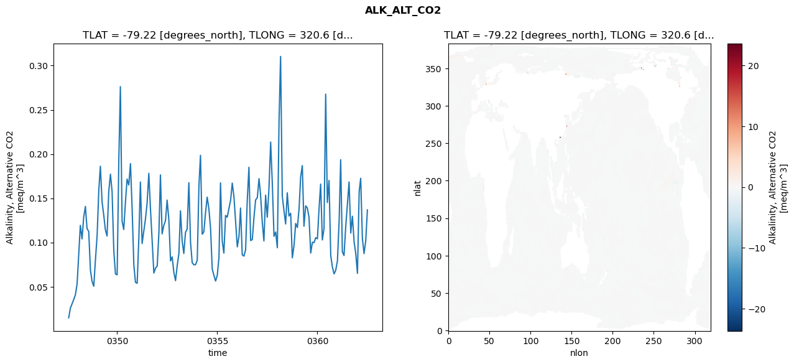
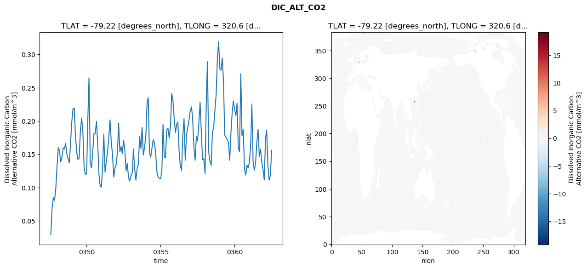
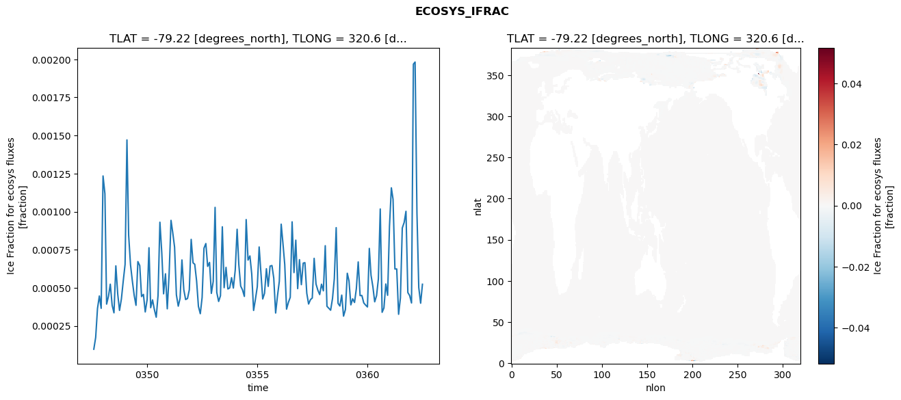
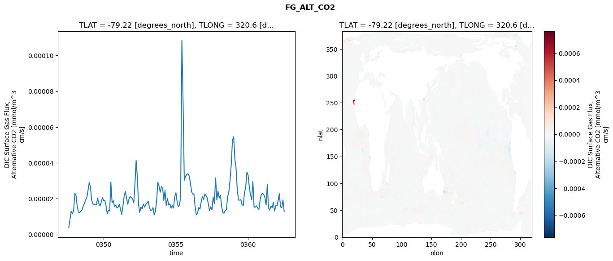

glb-dor_North_Atlantic_basin_021_1999-07-01_00086#
Simulation details#
Case: smyle.cdr-atlas-v0.glb-dor_North_Atlantic_basin_021_1999-07-01_00086.001
Basin: North_Atlantic_basin
Polygon: 21.0
Start date: 1999-07
Show code cell source Hide code cell source
import xarray as xr
import matplotlib.pyplot as plt
Show code cell source Hide code cell source
zarr_store = "/path/to/zarr/store"
# Parameters
zarr_store = "/global/cfs/projectdirs/m4746/Projects/Ocean-CDR-Atlas-v0/data/validation/smyle.cdr-atlas-v0.glb-dor_North_Atlantic_basin_021_1999-07-01_00086.001.validation.zarr"
Show code cell source Hide code cell source
%%time
ds_o = xr.open_zarr(zarr_store).compute()
ds_o
CPU times: user 647 ms, sys: 464 ms, total: 1.11 s
Wall time: 1.33 s
<xarray.Dataset> Size: 2MB
Dimensions: (nlat: 384, nlon: 320, time: 180)
Coordinates:
TLAT float64 8B -79.22
TLONG float64 8B 320.6
ULAT float64 8B -78.95
ULONG float64 8B 321.1
* time (time) object 1kB 0347-08-01 00:00:00 ... 0362-07-01 0...
z_t float32 4B 500.0
Dimensions without coordinates: nlat, nlon
Data variables:
ALK_ALT_CO2_diff (nlat, nlon) float32 492kB nan nan nan ... nan nan nan
ALK_ALT_CO2_rmse (time) float64 1kB 0.01482 0.02598 ... 0.1018 0.1368
DIC_ALT_CO2_diff (nlat, nlon) float32 492kB nan nan nan ... nan nan nan
DIC_ALT_CO2_rmse (time) float64 1kB 0.02879 0.06781 ... 0.1182 0.156
ECOSYS_IFRAC_diff (nlat, nlon) float32 492kB nan nan nan ... nan nan nan
ECOSYS_IFRAC_rmse (time) float64 1kB 9.716e-05 0.0001749 ... 0.0005237
FG_ALT_CO2_diff (nlat, nlon) float32 492kB nan nan nan ... nan nan nan
FG_ALT_CO2_rmse (time) float64 1kB 3.735e-06 8.322e-06 ... 1.295e-05xarray.Dataset
- nlat: 384
- nlon: 320
- time: 180
- TLAT()float64-79.22
- long_name :
- array of t-grid latitudes
- units :
- degrees_north
array(-79.22052261)
- TLONG()float64320.6
- long_name :
- array of t-grid longitudes
- units :
- degrees_east
array(320.56250892)
- ULAT()float64-78.95
- long_name :
- array of u-grid latitudes
- units :
- degrees_north
array(-78.95289509)
- ULONG()float64321.1
- long_name :
- array of u-grid longitudes
- units :
- degrees_east
array(321.12500894)
- time(time)object0347-08-01 00:00:00 ... 0362-07-...
- bounds :
- time_bound
- long_name :
- time
array([cftime.DatetimeNoLeap(347, 8, 1, 0, 0, 0, 0, has_year_zero=True), cftime.DatetimeNoLeap(347, 9, 1, 0, 0, 0, 0, has_year_zero=True), cftime.DatetimeNoLeap(347, 10, 1, 0, 0, 0, 0, has_year_zero=True), cftime.DatetimeNoLeap(347, 11, 1, 0, 0, 0, 0, has_year_zero=True), cftime.DatetimeNoLeap(347, 12, 1, 0, 0, 0, 0, has_year_zero=True), cftime.DatetimeNoLeap(348, 1, 1, 0, 0, 0, 0, has_year_zero=True), cftime.DatetimeNoLeap(348, 2, 1, 0, 0, 0, 0, has_year_zero=True), cftime.DatetimeNoLeap(348, 3, 1, 0, 0, 0, 0, has_year_zero=True), cftime.DatetimeNoLeap(348, 4, 1, 0, 0, 0, 0, has_year_zero=True), cftime.DatetimeNoLeap(348, 5, 1, 0, 0, 0, 0, has_year_zero=True), cftime.DatetimeNoLeap(348, 6, 1, 0, 0, 0, 0, has_year_zero=True), cftime.DatetimeNoLeap(348, 7, 1, 0, 0, 0, 0, has_year_zero=True), cftime.DatetimeNoLeap(348, 8, 1, 0, 0, 0, 0, has_year_zero=True), cftime.DatetimeNoLeap(348, 9, 1, 0, 0, 0, 0, has_year_zero=True), cftime.DatetimeNoLeap(348, 10, 1, 0, 0, 0, 0, has_year_zero=True), cftime.DatetimeNoLeap(348, 11, 1, 0, 0, 0, 0, has_year_zero=True), cftime.DatetimeNoLeap(348, 12, 1, 0, 0, 0, 0, has_year_zero=True), cftime.DatetimeNoLeap(349, 1, 1, 0, 0, 0, 0, has_year_zero=True), cftime.DatetimeNoLeap(349, 2, 1, 0, 0, 0, 0, has_year_zero=True), cftime.DatetimeNoLeap(349, 3, 1, 0, 0, 0, 0, has_year_zero=True), cftime.DatetimeNoLeap(349, 4, 1, 0, 0, 0, 0, has_year_zero=True), cftime.DatetimeNoLeap(349, 5, 1, 0, 0, 0, 0, has_year_zero=True), cftime.DatetimeNoLeap(349, 6, 1, 0, 0, 0, 0, has_year_zero=True), cftime.DatetimeNoLeap(349, 7, 1, 0, 0, 0, 0, has_year_zero=True), cftime.DatetimeNoLeap(349, 8, 1, 0, 0, 0, 0, has_year_zero=True), cftime.DatetimeNoLeap(349, 9, 1, 0, 0, 0, 0, has_year_zero=True), cftime.DatetimeNoLeap(349, 10, 1, 0, 0, 0, 0, has_year_zero=True), cftime.DatetimeNoLeap(349, 11, 1, 0, 0, 0, 0, has_year_zero=True), cftime.DatetimeNoLeap(349, 12, 1, 0, 0, 0, 0, has_year_zero=True), cftime.DatetimeNoLeap(350, 1, 1, 0, 0, 0, 0, has_year_zero=True), cftime.DatetimeNoLeap(350, 2, 1, 0, 0, 0, 0, has_year_zero=True), cftime.DatetimeNoLeap(350, 3, 1, 0, 0, 0, 0, has_year_zero=True), cftime.DatetimeNoLeap(350, 4, 1, 0, 0, 0, 0, has_year_zero=True), cftime.DatetimeNoLeap(350, 5, 1, 0, 0, 0, 0, has_year_zero=True), cftime.DatetimeNoLeap(350, 6, 1, 0, 0, 0, 0, has_year_zero=True), cftime.DatetimeNoLeap(350, 7, 1, 0, 0, 0, 0, has_year_zero=True), cftime.DatetimeNoLeap(350, 8, 1, 0, 0, 0, 0, has_year_zero=True), cftime.DatetimeNoLeap(350, 9, 1, 0, 0, 0, 0, has_year_zero=True), cftime.DatetimeNoLeap(350, 10, 1, 0, 0, 0, 0, has_year_zero=True), cftime.DatetimeNoLeap(350, 11, 1, 0, 0, 0, 0, has_year_zero=True), cftime.DatetimeNoLeap(350, 12, 1, 0, 0, 0, 0, has_year_zero=True), cftime.DatetimeNoLeap(351, 1, 1, 0, 0, 0, 0, has_year_zero=True), cftime.DatetimeNoLeap(351, 2, 1, 0, 0, 0, 0, has_year_zero=True), cftime.DatetimeNoLeap(351, 3, 1, 0, 0, 0, 0, has_year_zero=True), cftime.DatetimeNoLeap(351, 4, 1, 0, 0, 0, 0, has_year_zero=True), cftime.DatetimeNoLeap(351, 5, 1, 0, 0, 0, 0, has_year_zero=True), cftime.DatetimeNoLeap(351, 6, 1, 0, 0, 0, 0, has_year_zero=True), cftime.DatetimeNoLeap(351, 7, 1, 0, 0, 0, 0, has_year_zero=True), cftime.DatetimeNoLeap(351, 8, 1, 0, 0, 0, 0, has_year_zero=True), cftime.DatetimeNoLeap(351, 9, 1, 0, 0, 0, 0, has_year_zero=True), cftime.DatetimeNoLeap(351, 10, 1, 0, 0, 0, 0, has_year_zero=True), cftime.DatetimeNoLeap(351, 11, 1, 0, 0, 0, 0, has_year_zero=True), cftime.DatetimeNoLeap(351, 12, 1, 0, 0, 0, 0, has_year_zero=True), cftime.DatetimeNoLeap(352, 1, 1, 0, 0, 0, 0, has_year_zero=True), cftime.DatetimeNoLeap(352, 2, 1, 0, 0, 0, 0, has_year_zero=True), cftime.DatetimeNoLeap(352, 3, 1, 0, 0, 0, 0, has_year_zero=True), cftime.DatetimeNoLeap(352, 4, 1, 0, 0, 0, 0, has_year_zero=True), cftime.DatetimeNoLeap(352, 5, 1, 0, 0, 0, 0, has_year_zero=True), cftime.DatetimeNoLeap(352, 6, 1, 0, 0, 0, 0, has_year_zero=True), cftime.DatetimeNoLeap(352, 7, 1, 0, 0, 0, 0, has_year_zero=True), cftime.DatetimeNoLeap(352, 8, 1, 0, 0, 0, 0, has_year_zero=True), cftime.DatetimeNoLeap(352, 9, 1, 0, 0, 0, 0, has_year_zero=True), cftime.DatetimeNoLeap(352, 10, 1, 0, 0, 0, 0, has_year_zero=True), cftime.DatetimeNoLeap(352, 11, 1, 0, 0, 0, 0, has_year_zero=True), cftime.DatetimeNoLeap(352, 12, 1, 0, 0, 0, 0, has_year_zero=True), cftime.DatetimeNoLeap(353, 1, 1, 0, 0, 0, 0, has_year_zero=True), cftime.DatetimeNoLeap(353, 2, 1, 0, 0, 0, 0, has_year_zero=True), cftime.DatetimeNoLeap(353, 3, 1, 0, 0, 0, 0, has_year_zero=True), cftime.DatetimeNoLeap(353, 4, 1, 0, 0, 0, 0, has_year_zero=True), cftime.DatetimeNoLeap(353, 5, 1, 0, 0, 0, 0, has_year_zero=True), cftime.DatetimeNoLeap(353, 6, 1, 0, 0, 0, 0, has_year_zero=True), cftime.DatetimeNoLeap(353, 7, 1, 0, 0, 0, 0, has_year_zero=True), cftime.DatetimeNoLeap(353, 8, 1, 0, 0, 0, 0, has_year_zero=True), cftime.DatetimeNoLeap(353, 9, 1, 0, 0, 0, 0, has_year_zero=True), cftime.DatetimeNoLeap(353, 10, 1, 0, 0, 0, 0, has_year_zero=True), cftime.DatetimeNoLeap(353, 11, 1, 0, 0, 0, 0, has_year_zero=True), cftime.DatetimeNoLeap(353, 12, 1, 0, 0, 0, 0, has_year_zero=True), cftime.DatetimeNoLeap(354, 1, 1, 0, 0, 0, 0, has_year_zero=True), cftime.DatetimeNoLeap(354, 2, 1, 0, 0, 0, 0, has_year_zero=True), cftime.DatetimeNoLeap(354, 3, 1, 0, 0, 0, 0, has_year_zero=True), cftime.DatetimeNoLeap(354, 4, 1, 0, 0, 0, 0, has_year_zero=True), cftime.DatetimeNoLeap(354, 5, 1, 0, 0, 0, 0, has_year_zero=True), cftime.DatetimeNoLeap(354, 6, 1, 0, 0, 0, 0, has_year_zero=True), cftime.DatetimeNoLeap(354, 7, 1, 0, 0, 0, 0, has_year_zero=True), cftime.DatetimeNoLeap(354, 8, 1, 0, 0, 0, 0, has_year_zero=True), cftime.DatetimeNoLeap(354, 9, 1, 0, 0, 0, 0, has_year_zero=True), cftime.DatetimeNoLeap(354, 10, 1, 0, 0, 0, 0, has_year_zero=True), cftime.DatetimeNoLeap(354, 11, 1, 0, 0, 0, 0, has_year_zero=True), cftime.DatetimeNoLeap(354, 12, 1, 0, 0, 0, 0, has_year_zero=True), cftime.DatetimeNoLeap(355, 1, 1, 0, 0, 0, 0, has_year_zero=True), cftime.DatetimeNoLeap(355, 2, 1, 0, 0, 0, 0, has_year_zero=True), cftime.DatetimeNoLeap(355, 3, 1, 0, 0, 0, 0, has_year_zero=True), cftime.DatetimeNoLeap(355, 4, 1, 0, 0, 0, 0, has_year_zero=True), cftime.DatetimeNoLeap(355, 5, 1, 0, 0, 0, 0, has_year_zero=True), cftime.DatetimeNoLeap(355, 6, 1, 0, 0, 0, 0, has_year_zero=True), cftime.DatetimeNoLeap(355, 7, 1, 0, 0, 0, 0, has_year_zero=True), cftime.DatetimeNoLeap(355, 8, 1, 0, 0, 0, 0, has_year_zero=True), cftime.DatetimeNoLeap(355, 9, 1, 0, 0, 0, 0, has_year_zero=True), cftime.DatetimeNoLeap(355, 10, 1, 0, 0, 0, 0, has_year_zero=True), cftime.DatetimeNoLeap(355, 11, 1, 0, 0, 0, 0, has_year_zero=True), cftime.DatetimeNoLeap(355, 12, 1, 0, 0, 0, 0, has_year_zero=True), cftime.DatetimeNoLeap(356, 1, 1, 0, 0, 0, 0, has_year_zero=True), cftime.DatetimeNoLeap(356, 2, 1, 0, 0, 0, 0, has_year_zero=True), cftime.DatetimeNoLeap(356, 3, 1, 0, 0, 0, 0, has_year_zero=True), cftime.DatetimeNoLeap(356, 4, 1, 0, 0, 0, 0, has_year_zero=True), cftime.DatetimeNoLeap(356, 5, 1, 0, 0, 0, 0, has_year_zero=True), cftime.DatetimeNoLeap(356, 6, 1, 0, 0, 0, 0, has_year_zero=True), cftime.DatetimeNoLeap(356, 7, 1, 0, 0, 0, 0, has_year_zero=True), cftime.DatetimeNoLeap(356, 8, 1, 0, 0, 0, 0, has_year_zero=True), cftime.DatetimeNoLeap(356, 9, 1, 0, 0, 0, 0, has_year_zero=True), cftime.DatetimeNoLeap(356, 10, 1, 0, 0, 0, 0, has_year_zero=True), cftime.DatetimeNoLeap(356, 11, 1, 0, 0, 0, 0, has_year_zero=True), cftime.DatetimeNoLeap(356, 12, 1, 0, 0, 0, 0, has_year_zero=True), cftime.DatetimeNoLeap(357, 1, 1, 0, 0, 0, 0, has_year_zero=True), cftime.DatetimeNoLeap(357, 2, 1, 0, 0, 0, 0, has_year_zero=True), cftime.DatetimeNoLeap(357, 3, 1, 0, 0, 0, 0, has_year_zero=True), cftime.DatetimeNoLeap(357, 4, 1, 0, 0, 0, 0, has_year_zero=True), cftime.DatetimeNoLeap(357, 5, 1, 0, 0, 0, 0, has_year_zero=True), cftime.DatetimeNoLeap(357, 6, 1, 0, 0, 0, 0, has_year_zero=True), cftime.DatetimeNoLeap(357, 7, 1, 0, 0, 0, 0, has_year_zero=True), cftime.DatetimeNoLeap(357, 8, 1, 0, 0, 0, 0, has_year_zero=True), cftime.DatetimeNoLeap(357, 9, 1, 0, 0, 0, 0, has_year_zero=True), cftime.DatetimeNoLeap(357, 10, 1, 0, 0, 0, 0, has_year_zero=True), cftime.DatetimeNoLeap(357, 11, 1, 0, 0, 0, 0, has_year_zero=True), cftime.DatetimeNoLeap(357, 12, 1, 0, 0, 0, 0, has_year_zero=True), cftime.DatetimeNoLeap(358, 1, 1, 0, 0, 0, 0, has_year_zero=True), cftime.DatetimeNoLeap(358, 2, 1, 0, 0, 0, 0, has_year_zero=True), cftime.DatetimeNoLeap(358, 3, 1, 0, 0, 0, 0, has_year_zero=True), cftime.DatetimeNoLeap(358, 4, 1, 0, 0, 0, 0, has_year_zero=True), cftime.DatetimeNoLeap(358, 5, 1, 0, 0, 0, 0, has_year_zero=True), cftime.DatetimeNoLeap(358, 6, 1, 0, 0, 0, 0, has_year_zero=True), cftime.DatetimeNoLeap(358, 7, 1, 0, 0, 0, 0, has_year_zero=True), cftime.DatetimeNoLeap(358, 8, 1, 0, 0, 0, 0, has_year_zero=True), cftime.DatetimeNoLeap(358, 9, 1, 0, 0, 0, 0, has_year_zero=True), cftime.DatetimeNoLeap(358, 10, 1, 0, 0, 0, 0, has_year_zero=True), cftime.DatetimeNoLeap(358, 11, 1, 0, 0, 0, 0, has_year_zero=True), cftime.DatetimeNoLeap(358, 12, 1, 0, 0, 0, 0, has_year_zero=True), cftime.DatetimeNoLeap(359, 1, 1, 0, 0, 0, 0, has_year_zero=True), cftime.DatetimeNoLeap(359, 2, 1, 0, 0, 0, 0, has_year_zero=True), cftime.DatetimeNoLeap(359, 3, 1, 0, 0, 0, 0, has_year_zero=True), cftime.DatetimeNoLeap(359, 4, 1, 0, 0, 0, 0, has_year_zero=True), cftime.DatetimeNoLeap(359, 5, 1, 0, 0, 0, 0, has_year_zero=True), cftime.DatetimeNoLeap(359, 6, 1, 0, 0, 0, 0, has_year_zero=True), cftime.DatetimeNoLeap(359, 7, 1, 0, 0, 0, 0, has_year_zero=True), cftime.DatetimeNoLeap(359, 8, 1, 0, 0, 0, 0, has_year_zero=True), cftime.DatetimeNoLeap(359, 9, 1, 0, 0, 0, 0, has_year_zero=True), cftime.DatetimeNoLeap(359, 10, 1, 0, 0, 0, 0, has_year_zero=True), cftime.DatetimeNoLeap(359, 11, 1, 0, 0, 0, 0, has_year_zero=True), cftime.DatetimeNoLeap(359, 12, 1, 0, 0, 0, 0, has_year_zero=True), cftime.DatetimeNoLeap(360, 1, 1, 0, 0, 0, 0, has_year_zero=True), cftime.DatetimeNoLeap(360, 2, 1, 0, 0, 0, 0, has_year_zero=True), cftime.DatetimeNoLeap(360, 3, 1, 0, 0, 0, 0, has_year_zero=True), cftime.DatetimeNoLeap(360, 4, 1, 0, 0, 0, 0, has_year_zero=True), cftime.DatetimeNoLeap(360, 5, 1, 0, 0, 0, 0, has_year_zero=True), cftime.DatetimeNoLeap(360, 6, 1, 0, 0, 0, 0, has_year_zero=True), cftime.DatetimeNoLeap(360, 7, 1, 0, 0, 0, 0, has_year_zero=True), cftime.DatetimeNoLeap(360, 8, 1, 0, 0, 0, 0, has_year_zero=True), cftime.DatetimeNoLeap(360, 9, 1, 0, 0, 0, 0, has_year_zero=True), cftime.DatetimeNoLeap(360, 10, 1, 0, 0, 0, 0, has_year_zero=True), cftime.DatetimeNoLeap(360, 11, 1, 0, 0, 0, 0, has_year_zero=True), cftime.DatetimeNoLeap(360, 12, 1, 0, 0, 0, 0, has_year_zero=True), cftime.DatetimeNoLeap(361, 1, 1, 0, 0, 0, 0, has_year_zero=True), cftime.DatetimeNoLeap(361, 2, 1, 0, 0, 0, 0, has_year_zero=True), cftime.DatetimeNoLeap(361, 3, 1, 0, 0, 0, 0, has_year_zero=True), cftime.DatetimeNoLeap(361, 4, 1, 0, 0, 0, 0, has_year_zero=True), cftime.DatetimeNoLeap(361, 5, 1, 0, 0, 0, 0, has_year_zero=True), cftime.DatetimeNoLeap(361, 6, 1, 0, 0, 0, 0, has_year_zero=True), cftime.DatetimeNoLeap(361, 7, 1, 0, 0, 0, 0, has_year_zero=True), cftime.DatetimeNoLeap(361, 8, 1, 0, 0, 0, 0, has_year_zero=True), cftime.DatetimeNoLeap(361, 9, 1, 0, 0, 0, 0, has_year_zero=True), cftime.DatetimeNoLeap(361, 10, 1, 0, 0, 0, 0, has_year_zero=True), cftime.DatetimeNoLeap(361, 11, 1, 0, 0, 0, 0, has_year_zero=True), cftime.DatetimeNoLeap(361, 12, 1, 0, 0, 0, 0, has_year_zero=True), cftime.DatetimeNoLeap(362, 1, 1, 0, 0, 0, 0, has_year_zero=True), cftime.DatetimeNoLeap(362, 2, 1, 0, 0, 0, 0, has_year_zero=True), cftime.DatetimeNoLeap(362, 3, 1, 0, 0, 0, 0, has_year_zero=True), cftime.DatetimeNoLeap(362, 4, 1, 0, 0, 0, 0, has_year_zero=True), cftime.DatetimeNoLeap(362, 5, 1, 0, 0, 0, 0, has_year_zero=True), cftime.DatetimeNoLeap(362, 6, 1, 0, 0, 0, 0, has_year_zero=True), cftime.DatetimeNoLeap(362, 7, 1, 0, 0, 0, 0, has_year_zero=True)], dtype=object) - z_t()float32500.0
- long_name :
- depth from surface to midpoint of layer
- positive :
- down
- units :
- centimeters
- valid_max :
- 537500.0
- valid_min :
- 500.0
array(500., dtype=float32)
- ALK_ALT_CO2_diff(nlat, nlon)float32nan nan nan nan ... nan nan nan nan
- cell_methods :
- time: mean
- grid_loc :
- 3111
- long_name :
- Alkalinity, Alternative CO2
- units :
- meq/m^3
array([[ nan, nan, nan, ..., nan, nan, nan], [ nan, nan, nan, ..., nan, nan, nan], [0.00927734, 0.0012207 , 0.01513672, ..., nan, nan, nan], ..., [ nan, nan, nan, ..., nan, nan, nan], [ nan, nan, nan, ..., nan, nan, nan], [ nan, nan, nan, ..., nan, nan, nan]], dtype=float32) - ALK_ALT_CO2_rmse(time)float640.01482 0.02598 ... 0.1018 0.1368
- cell_methods :
- time: mean
- grid_loc :
- 3111
- long_name :
- Alkalinity, Alternative CO2
- units :
- meq/m^3
array([0.01481853, 0.02597706, 0.03051597, 0.03559611, 0.04080441, 0.05310293, 0.08733061, 0.1192993 , 0.10399676, 0.12838963, 0.14073897, 0.11571737, 0.11248476, 0.06877528, 0.05593084, 0.05049317, 0.0800737 , 0.10797713, 0.15957417, 0.18623345, 0.14615291, 0.13110987, 0.11414091, 0.10735812, 0.15759935, 0.17721976, 0.15712051, 0.09042991, 0.06444431, 0.06339754, 0.19527923, 0.27620953, 0.12415978, 0.11468556, 0.14544222, 0.17172685, 0.16496681, 0.18914807, 0.13823446, 0.07472303, 0.05493456, 0.05382751, 0.10623314, 0.16833402, 0.09885822, 0.11254396, 0.12654264, 0.14450538, 0.17814403, 0.13724074, 0.10190496, 0.06537835, 0.07093769, 0.07333866, 0.11085243, 0.17640155, 0.10971125, 0.11911179, 0.12469287, 0.14791948, 0.12588186, 0.07912029, 0.08370361, 0.06606851, 0.05684431, 0.07392899, 0.08782466, 0.13579582, 0.10174035, 0.08754072, 0.11156551, 0.11503861, 0.16759595, 0.09973946, 0.07707863, 0.07473524, 0.07491339, 0.07996217, 0.16467745, 0.19854682, 0.10934862, 0.11193058, 0.13371488, 0.15124191, 0.13821488, 0.11558902, 0.06998712, 0.06270421, 0.05637373, 0.06294134, 0.08321517, 0.16742002, 0.10189728, 0.08797236, 0.13053199, 0.12862427, 0.13833735, 0.14778219, 0.16715589, 0.15149124, 0.12383052, 0.09502339, 0.1071954 , 0.13893575, 0.08608206, 0.08455888, 0.09139036, 0.14708928, 0.18505697, 0.10218554, 0.10316317, 0.1286083 , 0.14807799, 0.15071581, 0.17216322, 0.15375561, 0.12289099, 0.10174486, 0.15352066, 0.12847546, 0.1608984 , 0.21354736, 0.16703492, 0.10693252, 0.11176528, 0.09401621, 0.23852311, 0.31037435, 0.15247129, 0.13631211, 0.12093926, 0.15613122, 0.12995108, 0.13299792, 0.0826237 , 0.09676646, 0.12146633, 0.11695573, 0.13814295, 0.17369624, 0.18693675, 0.11840481, 0.14138644, 0.13906897, 0.12857789, 0.08801616, 0.10021112, 0.09981738, 0.10544472, 0.10413593, 0.13944348, 0.16602161, 0.10290083, 0.11550321, 0.26776152, 0.1451698 , 0.17011676, 0.08513209, 0.07227697, 0.06446259, 0.06857757, 0.07925963, 0.12449224, 0.19357911, 0.08934761, 0.08522223, 0.11765229, 0.14239781, 0.16845499, 0.11064579, 0.12967049, 0.10082831, 0.08736602, 0.06509909, 0.15744116, 0.17257577, 0.10445937, 0.08739096, 0.1017958 , 0.13680572]) - DIC_ALT_CO2_diff(nlat, nlon)float32nan nan nan nan ... nan nan nan nan
- cell_methods :
- time: mean
- grid_loc :
- 3111
- long_name :
- Dissolved Inorganic Carbon, Alternative CO2
- units :
- mmol/m^3
array([[ nan, nan, nan, ..., nan, nan, nan], [ nan, nan, nan, ..., nan, nan, nan], [0.00537109, 0.00195312, 0.01196289, ..., nan, nan, nan], ..., [ nan, nan, nan, ..., nan, nan, nan], [ nan, nan, nan, ..., nan, nan, nan], [ nan, nan, nan, ..., nan, nan, nan]], dtype=float32) - DIC_ALT_CO2_rmse(time)float640.02879 0.06781 ... 0.1182 0.156
- cell_methods :
- time: mean
- grid_loc :
- 3111
- long_name :
- Dissolved Inorganic Carbon, Alternative CO2
- units :
- mmol/m^3
array([0.02879237, 0.06781018, 0.08458368, 0.08055752, 0.09732679, 0.13055452, 0.16004581, 0.1558558 , 0.13845153, 0.1443923 , 0.15963065, 0.15768436, 0.16626343, 0.15079663, 0.14329363, 0.13735827, 0.16677613, 0.19926154, 0.21875455, 0.21909559, 0.17871551, 0.1534922 , 0.14197514, 0.14385807, 0.18575687, 0.20433916, 0.18385476, 0.12925668, 0.11928435, 0.12117838, 0.20466453, 0.26483256, 0.13766781, 0.12930203, 0.1534425 , 0.18104689, 0.18142253, 0.19922162, 0.16701752, 0.11992755, 0.10190554, 0.10055374, 0.13393898, 0.18024516, 0.12306546, 0.13927165, 0.15335625, 0.1746674 , 0.20168399, 0.16838196, 0.15005658, 0.11561153, 0.12961876, 0.13479698, 0.15462439, 0.19694256, 0.15409906, 0.16139956, 0.15085934, 0.17128225, 0.15645073, 0.12508754, 0.13597608, 0.11450832, 0.10966028, 0.11803233, 0.1220371 , 0.15790669, 0.12766018, 0.11104063, 0.12863358, 0.13521494, 0.17703108, 0.15873082, 0.19016211, 0.14879636, 0.1604525 , 0.17705804, 0.22715166, 0.23524283, 0.15276733, 0.14570375, 0.15886464, 0.17181823, 0.16728621, 0.15148987, 0.12347008, 0.11539363, 0.11362031, 0.11329215, 0.126111 , 0.19493744, 0.14689242, 0.14454569, 0.18668663, 0.18893665, 0.1744531 , 0.19210151, 0.24146779, 0.23064411, 0.20408881, 0.18240963, 0.19495162, 0.19873105, 0.15526932, 0.132149 , 0.12592901, 0.17656841, 0.20337844, 0.14097287, 0.17883825, 0.19049708, 0.20100402, 0.2149523 , 0.2212856 , 0.20447995, 0.16052898, 0.1408702 , 0.17685623, 0.17038255, 0.19595143, 0.22829912, 0.18335955, 0.14169851, 0.14337514, 0.12091132, 0.23039016, 0.28914909, 0.15337868, 0.14008247, 0.13350269, 0.18163821, 0.19045868, 0.21591879, 0.23913388, 0.29326901, 0.31919821, 0.27880331, 0.27624407, 0.29469037, 0.26018205, 0.17903756, 0.17545233, 0.1723134 , 0.16711684, 0.14087071, 0.18171881, 0.21257215, 0.23001875, 0.21697722, 0.2079982 , 0.22679609, 0.15937728, 0.15384183, 0.27109669, 0.17814858, 0.18737873, 0.12758375, 0.11858093, 0.13353155, 0.12934299, 0.13891909, 0.16620207, 0.22552091, 0.13847455, 0.12608231, 0.1367876 , 0.16716923, 0.18776428, 0.14685755, 0.15732111, 0.13766855, 0.1270722 , 0.11149125, 0.17370553, 0.18621856, 0.1323486 , 0.11103682, 0.11816314, 0.15602735]) - ECOSYS_IFRAC_diff(nlat, nlon)float32nan nan nan nan ... nan nan nan nan
- cell_methods :
- time: mean
- grid_loc :
- 2110
- long_name :
- Ice Fraction for ecosys fluxes
- units :
- fraction
array([[ nan, nan, nan, ..., nan, nan, nan], [ nan, nan, nan, ..., nan, nan, nan], [2.6166439e-05, 7.9095364e-05, 4.0769577e-05, ..., nan, nan, nan], ..., [ nan, nan, nan, ..., nan, nan, nan], [ nan, nan, nan, ..., nan, nan, nan], [ nan, nan, nan, ..., nan, nan, nan]], dtype=float32) - ECOSYS_IFRAC_rmse(time)float649.716e-05 0.0001749 ... 0.0005237
- cell_methods :
- time: mean
- grid_loc :
- 2110
- long_name :
- Ice Fraction for ecosys fluxes
- units :
- fraction
array([9.71648751e-05, 1.74856274e-04, 3.64548351e-04, 4.46666655e-04, 3.65628107e-04, 1.23444600e-03, 1.11758969e-03, 3.93224959e-04, 4.44597530e-04, 5.23947584e-04, 3.85099326e-04, 3.36141380e-04, 6.44316124e-04, 4.59625210e-04, 3.51932328e-04, 4.27166216e-04, 5.42564702e-04, 6.54020373e-04, 1.47102821e-03, 8.46686692e-04, 6.51255733e-04, 5.46363743e-04, 4.50193002e-04, 3.85332132e-04, 6.72579212e-04, 6.45874462e-04, 4.42774910e-04, 4.57104625e-04, 3.41805585e-04, 4.21347314e-04, 7.63193068e-04, 3.69721635e-04, 4.20982517e-04, 3.57675242e-04, 3.07342760e-04, 4.49994604e-04, 9.30809701e-04, 7.29940954e-04, 4.60741571e-04, 5.92270350e-04, 3.62368888e-04, 5.95405307e-04, 9.42856724e-04, 8.64125920e-04, 7.67353469e-04, 4.54085836e-04, 3.79692239e-04, 4.31235259e-04, 6.83155475e-04, 4.86810638e-04, 4.23251750e-04, 4.29980203e-04, 4.87027640e-04, 8.18099817e-04, 6.64026119e-04, 6.54870168e-04, 5.44247124e-04, 3.78375173e-04, 3.30216706e-04, 4.36630614e-04, 7.60176153e-04, 7.90829176e-04, 6.40990507e-04, 6.66807525e-04, 4.63594732e-04, 5.41674088e-04, 1.02819380e-03, 4.70279715e-04, 4.10673088e-04, 4.47952833e-04, 9.00783482e-04, 5.01132940e-04, 6.34524578e-04, 4.92722461e-04, 4.99379157e-04, 5.66686734e-04, 4.98625327e-04, 6.17705077e-04, 8.84560971e-04, 6.53030460e-04, ... 4.45380924e-04, 5.42764157e-04, 9.17908123e-04, 7.96764076e-04, 6.52732075e-04, 3.60358444e-04, 4.04987574e-04, 4.37813568e-04, 9.33170395e-04, 6.00178797e-04, 8.12918120e-04, 4.94904470e-04, 6.84996099e-04, 5.20915973e-04, 6.62246668e-04, 6.65473474e-04, 4.64386929e-04, 3.93741732e-04, 4.22573603e-04, 4.33039400e-04, 6.93651948e-04, 5.25026977e-04, 4.84904287e-04, 4.55743865e-04, 5.23975670e-04, 4.80467236e-04, 7.76558623e-04, 3.78983124e-04, 3.65662972e-04, 3.53184814e-04, 4.29622046e-04, 5.59548663e-04, 8.95160225e-04, 3.98456537e-04, 3.80766248e-04, 4.52296498e-04, 3.14166690e-04, 3.57410410e-04, 5.95655192e-04, 5.45886604e-04, 3.88150585e-04, 4.27934603e-04, 4.03899100e-04, 4.94502897e-04, 6.70118142e-04, 4.49106358e-04, 4.49521467e-04, 4.00974335e-04, 3.87051742e-04, 3.74555147e-04, 7.58767185e-04, 5.83234238e-04, 5.07240125e-04, 4.08288457e-04, 4.48918058e-04, 5.58642345e-04, 1.01775467e-03, 3.39433867e-04, 3.67943637e-04, 5.25367215e-04, 4.51129316e-04, 9.03673017e-04, 1.15650829e-03, 1.08160249e-03, 6.23681899e-04, 6.24033960e-04, 3.26454541e-04, 4.33783435e-04, 8.92835347e-04, 9.29126070e-04, 1.00238507e-03, 4.69153061e-04, 4.49329507e-04, 4.00792785e-04, 1.96809407e-03, 1.98223327e-03, 9.90046426e-04, 5.02275407e-04, 3.99217373e-04, 5.23674626e-04]) - FG_ALT_CO2_diff(nlat, nlon)float32nan nan nan nan ... nan nan nan nan
- cell_methods :
- time: mean
- grid_loc :
- 2110
- long_name :
- DIC Surface Gas Flux, Alternative CO2
- units :
- mmol/m^3 cm/s
array([[ nan, nan, nan, ..., nan, nan, nan], [ nan, nan, nan, ..., nan, nan, nan], [-1.8040282e-08, -3.3199740e-08, -7.8230151e-09, ..., nan, nan, nan], ..., [ nan, nan, nan, ..., nan, nan, nan], [ nan, nan, nan, ..., nan, nan, nan], [ nan, nan, nan, ..., nan, nan, nan]], dtype=float32) - FG_ALT_CO2_rmse(time)float643.735e-06 8.322e-06 ... 1.295e-05
- cell_methods :
- time: mean
- grid_loc :
- 2110
- long_name :
- DIC Surface Gas Flux, Alternative CO2
- units :
- mmol/m^3 cm/s
array([3.73514730e-06, 8.32205485e-06, 1.29690913e-05, 1.15008109e-05, 1.32085945e-05, 2.29649927e-05, 2.18518035e-05, 1.62131241e-05, 1.25728161e-05, 1.23665479e-05, 1.30373046e-05, 1.37056386e-05, 1.58756287e-05, 1.74059166e-05, 1.91986264e-05, 2.06164403e-05, 2.46548148e-05, 2.92122873e-05, 2.64796155e-05, 1.94682454e-05, 1.71043319e-05, 1.68801681e-05, 1.68765667e-05, 1.66780972e-05, 2.04263652e-05, 1.71956352e-05, 1.60339306e-05, 1.81583550e-05, 2.07266635e-05, 1.88212935e-05, 1.89163946e-05, 1.60120207e-05, 1.15698181e-05, 1.36317608e-05, 1.31196505e-05, 2.92547124e-05, 1.78438288e-05, 1.88644232e-05, 1.56339207e-05, 1.63456103e-05, 1.48081985e-05, 1.53150478e-05, 1.69652847e-05, 1.41446686e-05, 1.12257822e-05, 1.57838843e-05, 2.11703856e-05, 2.40921526e-05, 2.05160185e-05, 1.68969812e-05, 1.98304909e-05, 2.12144461e-05, 2.06681317e-05, 1.98120563e-05, 1.78071579e-05, 2.77530795e-05, 4.14346784e-05, 3.22354623e-05, 1.68765119e-05, 1.23004550e-05, 1.53485710e-05, 1.43298810e-05, 1.70285286e-05, 1.53975834e-05, 1.68127896e-05, 1.74178454e-05, 1.86767252e-05, 1.53341744e-05, 1.34823602e-05, 1.35764239e-05, 1.50575034e-05, 1.10703734e-05, 1.30074034e-05, 1.90021776e-05, 2.91900856e-05, 2.71011472e-05, 2.36692369e-05, 2.67739756e-05, 2.58091376e-05, 1.90829270e-05, ... 3.27923162e-05, 2.91535781e-05, 2.39744830e-05, 2.25389635e-05, 2.27150190e-05, 1.57560090e-05, 1.10080672e-05, 1.19134189e-05, 1.50883548e-05, 1.42065332e-05, 1.80845578e-05, 2.12185911e-05, 1.96010413e-05, 2.26792139e-05, 2.17673609e-05, 2.05757644e-05, 1.70287022e-05, 1.34208424e-05, 1.55775055e-05, 1.37506189e-05, 2.08380567e-05, 1.73859467e-05, 3.16555945e-05, 1.94604939e-05, 2.42409425e-05, 2.04026967e-05, 2.18349917e-05, 1.60762005e-05, 1.22368487e-05, 1.19053175e-05, 1.34087647e-05, 1.38190578e-05, 2.11252526e-05, 2.38496421e-05, 3.02684454e-05, 3.91670787e-05, 5.25839585e-05, 5.46370138e-05, 4.18108898e-05, 3.74389916e-05, 2.54396227e-05, 1.92613616e-05, 1.92197673e-05, 1.94686860e-05, 1.66413397e-05, 1.62326243e-05, 2.35077169e-05, 2.62972059e-05, 3.49316413e-05, 3.31132602e-05, 2.62863920e-05, 2.24354961e-05, 1.94604588e-05, 2.96269466e-05, 1.52851624e-05, 1.53143757e-05, 1.59979027e-05, 1.47842692e-05, 1.40600390e-05, 1.94815867e-05, 2.23813053e-05, 2.30781478e-05, 2.23195102e-05, 2.07113245e-05, 1.64468251e-05, 2.81031505e-05, 1.47699045e-05, 1.36255438e-05, 1.60131286e-05, 1.48871200e-05, 1.79102698e-05, 1.31148502e-05, 1.60881799e-05, 1.60837184e-05, 1.92058508e-05, 2.28270264e-05, 1.55183390e-05, 1.49812205e-05, 1.93048992e-05, 1.29497389e-05])
- timePandasIndex
PandasIndex(CFTimeIndex([0347-08-01 00:00:00, 0347-09-01 00:00:00, 0347-10-01 00:00:00, 0347-11-01 00:00:00, 0347-12-01 00:00:00, 0348-01-01 00:00:00, 0348-02-01 00:00:00, 0348-03-01 00:00:00, 0348-04-01 00:00:00, 0348-05-01 00:00:00, ... 0361-10-01 00:00:00, 0361-11-01 00:00:00, 0361-12-01 00:00:00, 0362-01-01 00:00:00, 0362-02-01 00:00:00, 0362-03-01 00:00:00, 0362-04-01 00:00:00, 0362-05-01 00:00:00, 0362-06-01 00:00:00, 0362-07-01 00:00:00], dtype='object', length=180, calendar='noleap', freq='MS'))
Show code cell source Hide code cell source
variables = [v[:-5] for v in ds_o.variables if "_rmse" in v]
Show code cell source Hide code cell source
plt.rcParams.update({'figure.max_open_warning': 0})
for v in variables:
fig, axs = plt.subplots(1, 2, figsize=(15, 6))
ds_o[f"{v}_rmse"].plot(ax=axs[0])
ds_o[f"{v}_diff"].plot(ax=axs[1])
plt.suptitle(v, fontweight="bold")



